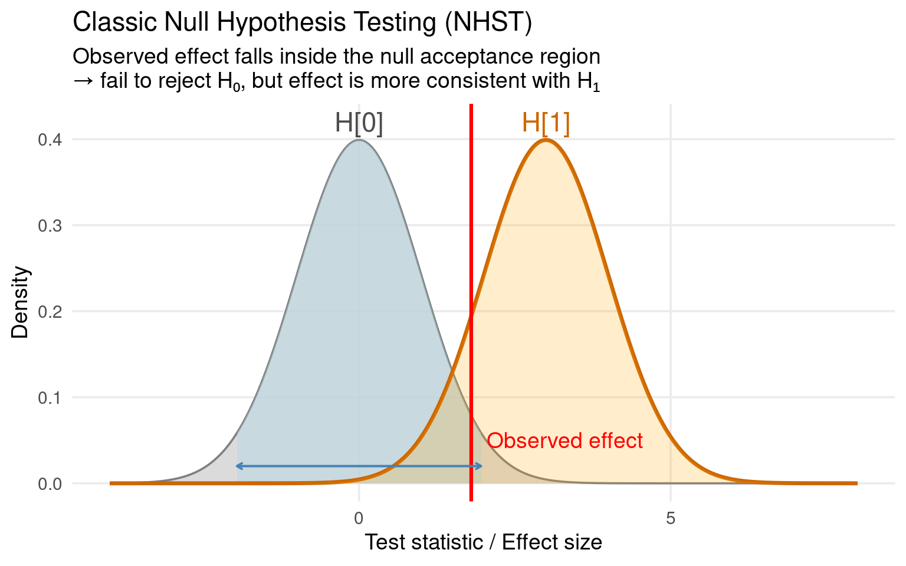
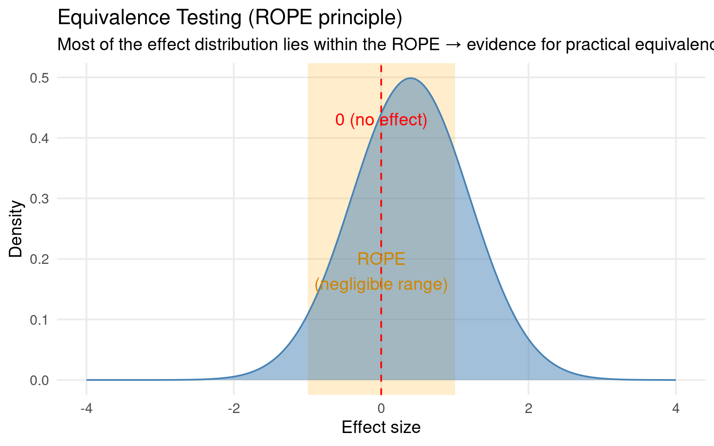

24 Equivalence testing
24.1 Motivation
Imagine we’re running an experiment comparing different insect lines or treatments — for example, testing whether two genetic strains, or two rearing conditions, lead to different body masses or survival rates.
24.1.1 The standard question
Traditionally, we analyze such data using null-hypothesis significance testing (NHST) and design our studies with power analysis.
The null hypothesis (H₀) says there’s no difference between treatments (e.g., mean body mass difference = 0).
A significant p-value (p < 0.05) leads us to conclude that there is a difference.
Power analysis tells us how many samples we need to detect a given difference (e.g., a 5% or 10% change in mass).
This framework is excellent when our goal is to find differences — for example, when we hope a new treatment improves performance relative to a control.
24.1.2 Testing for no difference
In many biological and applied contexts, the question isn’t “Are they different?” but rather:
“Are they effectively the same?”
For example:
We’ve developed a new insect diet and want to ensure it performs as well as the standard one.
We’re testing whether two breeding lines have equivalent fitness before merging them in a production colony.
We want to confirm that a new pesticide formulation is no worse than the established product within a biologically acceptable margin.
In these cases, a non-significant result from a classical test (p > 0.05) does not prove equivalence
it merely means we don’t have enough evidence to detect a difference.
The true difference could still be large; we just might not have had enough power.
24.2 Equivalence testing
Equivalence testing inverts the logic:
We define a Region of Practical Equivalence (ROPE) — a range of differences so small they are biologically or practically negligible (e.g., ±5% in body mass).
-
The null hypothesis becomes:
𝐻0: The true difference lies outside the ROPE (i.e., not equivalent)
-
The alternative hypothesis:
𝐻1: The true difference lies entirely within the ROPE (i.e., equivalent)
If the confidence interval for our treatment difference lies completely inside this equivalence range, we can accept practical equivalence.

24.2.1 What we can do with this
Equivalence testing allows us to:
Formally conclude that two treatments perform “the same” within a tolerance, rather than merely failing to find a difference.
Incorporate biological relevance (what counts as a meaningful difference) directly into the statistical test.
Quantify how much of the observed uncertainty (the CI) lies inside or outside that practical range — via measures like the Second-Generation p-Value (SGPV).
Design experiments for “sufficient evidence of sameness” (safeguard power or TOST power), not just “evidence of difference.”
24.3 Example:
We want to know if a new set of diet conditions effects the adult body mass of a set of insects:
Confidence Intervals
- Fit 95% Confidence to your models
We can use our calculated confidence intervals of the difference to make a statement about the likely true difference in body mass for insects between treatment A and B.
24.4 Equivalence testing
In equivalence testing, we’re not checking whether two means are different, but whether their difference is small enough to be considered practically the same — that is, within some limits (say between −Δ and +Δ).
To do this, we run two one-sided tests:
Test if the difference is greater than the lower limit (−Δ).
Test if the difference is less than the upper limit (+Δ).
Each of those tests is done at significance level α (for example, α = 0.05). For both conditions to hold, we need both one-sided tests to be significant.
Now, when we express this as a single confidence interval, we must account for the fact that we used two one-sided tests — one for each tail. Because α is “spent” on both sides, the combined confidence level becomes (1 – 2α).
So if α = 0.05, we get a 90% confidence interval, not 95%.
24.4.1 Set a standard
Let’s say a difference smaller than 40 g is acceptable.
This could be because we think its biologically negligible or
it could be that Diet B saves us a lot of money and we are willing to make the tradeoff within certain bounds
For this data we define a ROPE (Region of Practical Equivalence) as between 0-40 g weight lost.
24.4.1.1 Output example:
| Parameter | CI | CI_low | CI_high | SGPV | ROPE_low | ROPE_high | ROPE_Equivalence | p | |
|---|---|---|---|---|---|---|---|---|---|
| V1 | (Intercept) | 0.9 | 387.53804 | 418.04782 | 0.0000 | 0 | -40 | Rejected | 1.00000 |
| V2 | treatmentB | 0.9 | -39.43401 | -4.20435 | 0.9709 | 0 | -40 | Accepted | 1.02118 |
| V3 | sexMale | 0.9 | -220.49735 | -185.26768 | 0.0000 | 0 | -40 | Rejected | 1.00000 |
24.4.1.2 Interpretation:
The treatment effect (−21.8 g) lies completely within the ROPE of ±40 g → practically equivalent.
The sex effect (−203 g) lies far outside the ROPE → meaningful biological difference.
The SGPV (Second-Generation p-value) quantifies how much of the CI overlaps the ROPE (1 = fully inside, 0 = outside).
So:
- Even though the treatment effect was “statistically significant” (p = 0.04), the equivalence test says it’s practically negligible for our margins.
24.4.2 Visualize your equivalence results
You can use the see package to visualize the CI and ROPE region.
This shows:
- Each coefficient and its 90% CI
The ROPE zone (here, ±40 g)
A colour-coded decision (“Accepted”, “Rejected”, “Undecided”)
Try a different equivalence margin
- Are the diets equivalent at 0-20g?
| Parameter | CI | CI_low | CI_high | SGPV | ROPE_low | ROPE_high | ROPE_Equivalence | p | |
|---|---|---|---|---|---|---|---|---|---|
| V1 | (Intercept) | 0.9 | 387.53804 | 418.04782 | 0.0000 | 0 | -20 | Rejected | 1.000000 |
| V2 | treatmentB | 0.9 | -39.43401 | -4.20435 | 0.4122 | 0 | -20 | Rejected | 1.021104 |
| V3 | sexMale | 0.9 | -220.49735 | -185.26768 | 0.0000 | 0 | -20 | Rejected | 1.000000 |
24.5 Reporting
A linear model predicting insect body mass revealed a small treatment effect (−21.8 g, 90% CI [−39.4, −4.2]), and a strong effect of sex (−202.9 g, 90% CI [−220.5, −185.3]).
Equivalence testing using a ROPE of ±40g (A 10% difference in mass) indicated that the treatment difference was practically equivalent to zero, whereas the sex difference was meaningful.
24.6 Glossary
| Term | Definition |
|---|---|
| Null Hypothesis (H₀) | The default assumption that there is no true difference between groups or treatments (e.g., mean body mass difference = 0). |
| Alternative Hypothesis (H₁) | The competing claim that there is a true difference (e.g., H₁: difference ≠ 0). |
| Region of Practical Equivalence (ROPE) | A range of effect sizes (e.g., −5% to +5%) considered biologically or practically negligible. If the CI of an effect lies entirely within this region, the treatments are deemed practically equivalent. |
| Equivalence Testing | A statistical approach that tests whether an observed effect is small enough to be considered negligible. Instead of asking “is there a difference?”, it asks “is any difference practically zero?”. |
| TOST (Two One-Sided Tests) | A frequentist method for equivalence testing that performs two one-sided hypothesis tests—one for each bound of the ROPE—to check whether the effect is significantly greater than the lower bound and smaller than the upper bound. |
| Second-Generation p-Value (SGPV) | A measure of how much of the confidence interval lies within the ROPE. Values: 1 → entirely inside (strong evidence for equivalence); 0 → entirely outside (strong evidence against equivalence); between 0–1 → partial overlap (inconclusive). |
| Confidence Interval (CI) | A range that likely contains the true parameter value with a specified probability (e.g., 90% or 95%). In equivalence testing, the CI is compared directly to the ROPE. |
| Effect Size | A quantitative measure of the magnitude of a treatment effect (e.g., Cohen’s d, η², or regression coefficient). Equivalence testing uses effect size thresholds to define what is “small enough” to be negligible. |
| Statistical Significance (p-value) | The probability of observing an effect as extreme as the current result if H₀ were true. A small p-value (< 0.05) implies evidence against H₀, but does not imply equivalence when non-significant. |
| Power (1 − β) | The probability that a test correctly rejects a false null hypothesis — i.e., detects a true effect of a specified size. Classic power analysis is designed for detecting differences, not for confirming equivalence. |
| Practical Equivalence | The conclusion that two treatments perform similarly enough that any difference is negligible for practical or biological purposes. |
| Undecided Region | When the CI overlaps both the ROPE and values outside it, indicating insufficient evidence to conclude either equivalence or difference. |